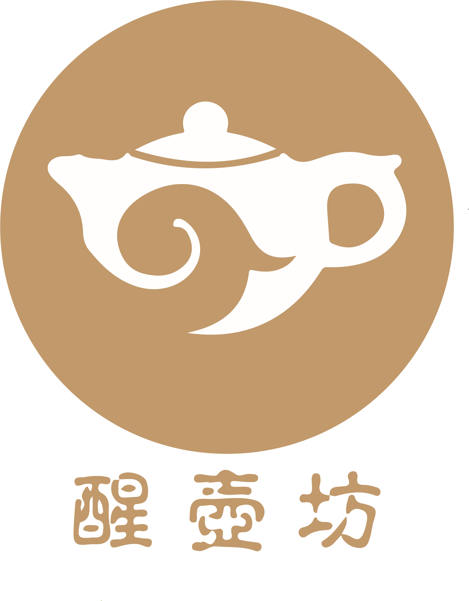
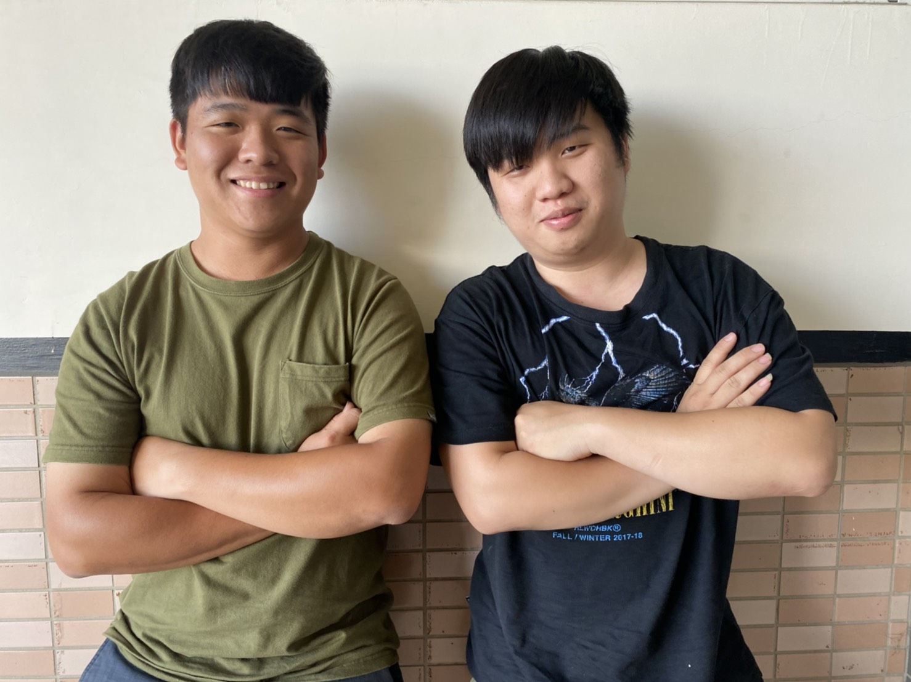

| 期末報告 | 包裝報告 | 第四頁之 | 第五頁之 |
 醒壺，是每一支壺最主要的開壺方式，一支壺的第二次生命，醒壺是非常重要的關鍵。 所以命名為「醒壺坊」。我們相信每支壺都是有靈性的，所以我們結合了四方祥瑞， 以四靈為主題，讓壺更富有靈氣，能沖泡出一杯杯好茶，故名為靈壺沖。 Supervising Professor 張錦郎 Chang, Chin-Lang alang5317@yahoo.com.tw

Team  施侑德 王佑麒 Su,Yu- De Wang, Yo- Qi e9611210@gmail.com yoqi1211@gmail.com